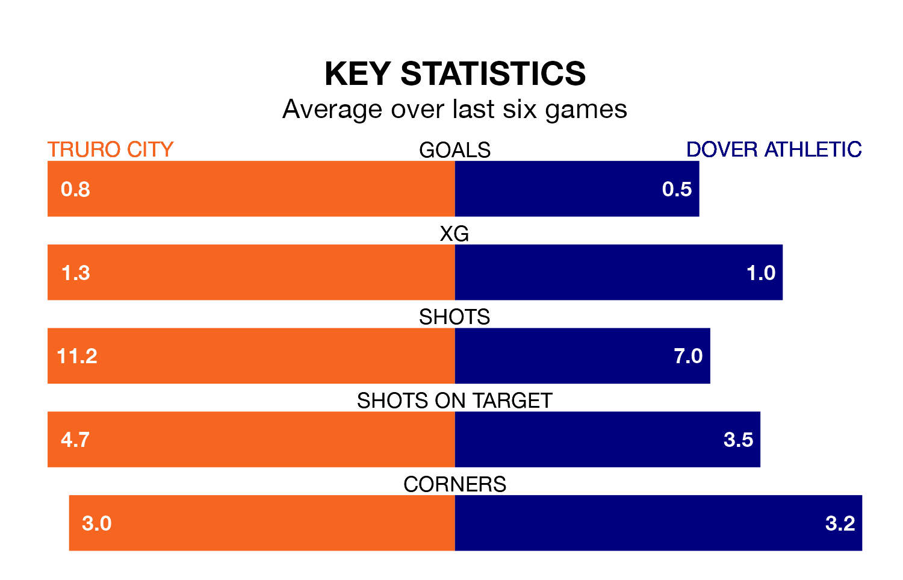

Truro City are heavy favourites to keep all three points at home in Tuesday's late kick-off against Dover Athletic.
Truro, who sit 19th in the National League South with 42 games played, are priced at 1.6 to seal victory at Manadon Sports Hub.
Sitting five places and 21 points behind them in the table, Dover are 4.8 to win with *Betting Company*, while the draw is at 3.6.
Truro are in bad form in the National League South, with no wins and three draws from their last six games.
With a win and three draws over that period, Dover's form is better – they have taken six points from 18, compared to City's three.
With 39 goals in 43 games so far this season, Athletic are the league's lowest scorers with 0.9 goals per game. And they are conceding more than average, letting in 72 goals at a rate of 1.7 per game.
The home team are also below average scorers, with 1.3 goals per game, compared to a league average of 1.4. They have conceded 1.5 goals per game.
Truro's last match was on Thursday, a 2-0 loss against Yeovil Town.
Dover drew 1-1 with Hemel Hempstead Town last time out, on April 6.
Updated: 10:01 (UTC), 12/04/24